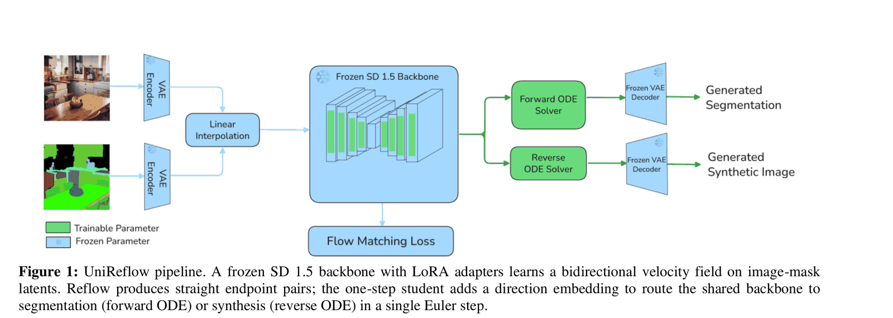
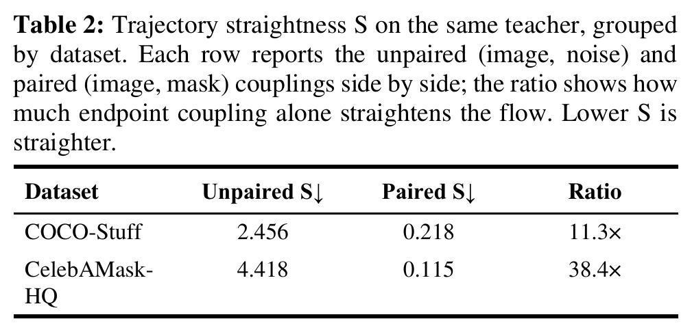
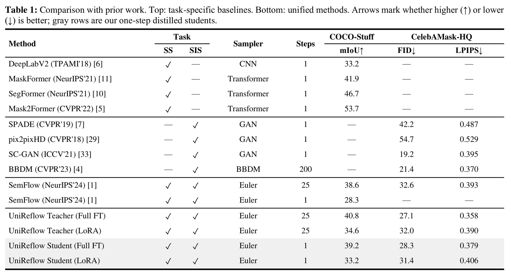
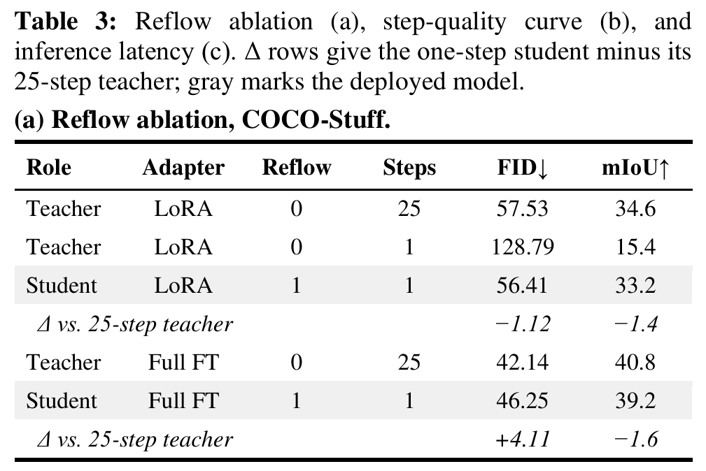
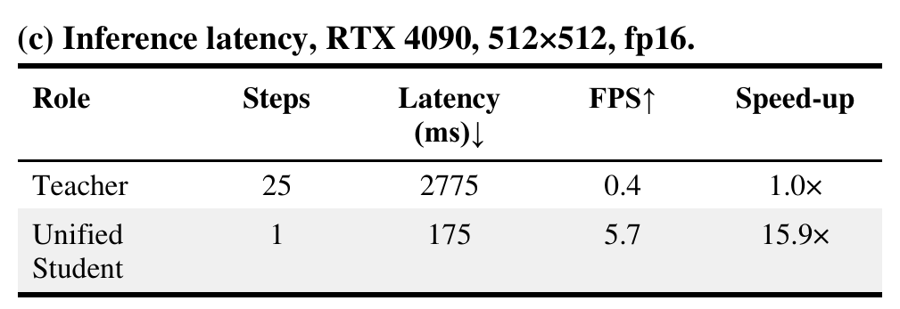
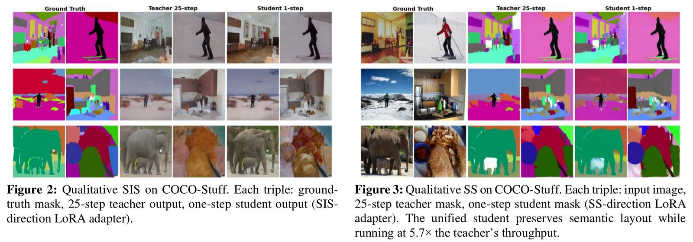

UniReflow: segmentation and image synthesis in one step
Muhammad Ridha Agam, Novendra Setyawan, Chi-Chia Sun, Hui-Kai Su, Jun-Wei Hsieh
Semantic segmentation turns an image into a label map. Semantic image synthesis goes the other way, from a label map to a photo-like image. UniReflow does both with one model, in a single step. The paper received the Best Paper Award at NCWIA 2026.
- One direction-conditioned network handles segmentation and synthesis, each in one Euler step.
- 39.2 mIoU on COCO-Stuff in one step, within 1.6 of its 25-step teacher. SemFlow needs 25 steps to reach 38.6.
- 175 ms per image on an RTX 4090 instead of 2,775 ms, a 15.9× speed-up.
The problem
Recent unified flow models such as SemFlow treat segmentation and synthesis as one ordinary differential equation between image latents and mask latents: integrating forward segments, integrating backward synthesizes. They need 25 Euler steps per image, which limits throughput on consumer GPUs. Rectified flow and reflow distillation can collapse many steps into one, but the usual recipe for noise-to-image models needs several reflow rounds and does not transfer as-is.
The idea in one picture

How it works
Bidirectional teacher. A single SD 1.5 U-Net with rank-128 LoRA adapters on the attention and feed-forward projections and on the convolutions inside each residual block, about 10% of all parameters. The convolutions matter: attention-only adapters fail to learn sharp semantic boundaries. Integrating forward gives segmentation, integrating backward gives synthesis, with no change to the architecture.
Reflow. For each training sample the teacher is integrated for 50 Euler steps and the endpoint pair is stored, 50K pairs per direction. Training on these pairs straightens the trajectories so that one Euler step lands in the right place.
Direction-conditioned student. A learnable embedding for the direction (0 for segmentation, 1 for synthesis) is added to the time embedding through the U-Net class-embedding slot. Each direction has its own LoRA adapter of the same rank, trained with MSE for masks and LPIPS for images.
Why one reflow is enough
An image and its mask describe the same scene: they share boundaries, layout and the extent of each object. So the transport between them is close to a straight line, unlike transport from random noise. The paper measures this directly with the trajectory straightness integral S (lower is straighter): with the same teacher, pairing each image with its mask makes the flow 11.3× straighter on COCO-Stuff and 38.4× straighter on CelebAMask-HQ than pairing it with noise.

The results
Among one-step dual-task methods, UniReflow is the strongest entry. In a single step it improves COCO-Stuff mIoU over one-step SemFlow by 10.9 points at the full-fine-tune scale and 4.9 points at the LoRA scale. Specialists such as Mask2Former (segmentation) or BBDM (synthesis) still lead in their own direction, but none of them can do the opposite task.

The reflow step is what makes one step work. Without it, the LoRA teacher run for a single step collapses to FID 128.79 and 15.4 mIoU. After one reflow iteration, the one-step student reaches FID 56.41 and 33.2 mIoU, next to the 25-step teacher at 57.53 and 34.6. The full-fine-tune model behaves the same way: 39.2 mIoU against the teacher's 40.8.


What it looks like

The student keeps the global structure and the semantic layout in both directions. The teacher still renders finer textures and resolves thin structures better; hair strands, poles, fences and small accessories are where one-step inference loses detail, because those high-frequency regions rely on iterative refinement.
Takeaways
When the source and target share spatial correspondence, straightening the transport is a better route to fast inference than adding model capacity or integration steps. Next steps from the paper: a formal curvature metric, wider benchmarks such as ADE20K and Cityscapes, boundary-aware objectives, text-conditioned generation, and the same single-reflow recipe on other aligned tasks such as depth estimation and edge-guided synthesis.